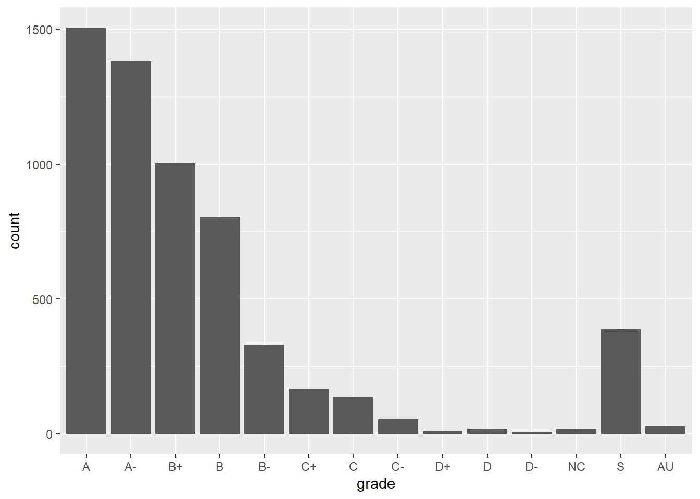
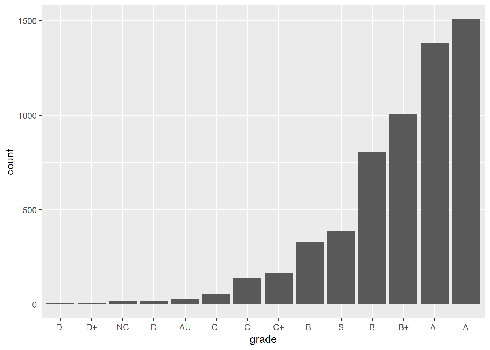

Topic 8 Categorical Variables as Factors
Learning Goals
- Understand the difference between a variable stored as a
charactervs. afactor - Be able to convert a
charactervariable to afactor - Develop comfort in manipulating the order and values of a factor with the
forcatspackage to improve summaries and visualizations.
Create a new Rmd file (save it as 10-Factors.Rmd). Put this file in a folder Assignment_06 in your COMP_STAT_112 folder.
- You are used to using template Rmd files but you are ready to create your own!
- Look at previous Rmd files and notice patterns. You can copy the top YAML section over and adjust.
- Note that if you use {exercise} instead of {r} that it will automatically number your exercises!
- Make sure to add
fig.altfor your visualizations!
- From now on, you’ll be expected to create your own Rmd files and make them look clean and organized so that preceptors and instructors can easily read the knitted file and give feedback.
Example: Grade Distribution
Grades <- read_csv("https://jamesnormington.github.io/112_spring_2023/data/grades.csv")
Grades <- Grades %>%
select(sid, sessionID, grade) %>%
distinct(sid, sessionID, .keep_all = TRUE)We will continue with the grades data from the previous activity. Here is a sample to remember what it looks like:
| sid | sessionID | grade |
|---|---|---|
| S31842 | session2207 | B+ |
| S32436 | session3172 | S |
| S31671 | session3435 | A- |
| S31929 | session3512 | NC |
Here is a bar chart of the grade distribution:
ggplot(Grades, aes(x = grade)) +
geom_bar()We can also wrangle a table that just has each grade and the number of times it appears:
GradeDistribution <- Grades %>%
group_by(grade) %>%
summarize(count = n())# Alternatively, we can use the count() function the creates a variable called n
Grades %>%
count(grade) | grade | count |
|---|---|
| A | 1506 |
| A- | 1381 |
| AU | 27 |
| B | 804 |
| B- | 330 |
| B+ | 1003 |
| C | 137 |
| C- | 52 |
| C+ | 167 |
| D | 18 |
| D- | 6 |
| D+ | 8 |
| NC | 17 |
| S | 388 |
What could be improved about this graphic and table?
The grades are listed alphabetically, which isn’t particularly meaningful. Why are they listed that way? Because the variable grade is a character string type:
class(Grades$grade)## [1] "character"When dealing with categorical variables that take a finite number of values (levels, formally), it is often useful to store the variable as a factor, and specify a meaningful order for the levels.
For example, when the entries are stored as character strings, we cannot use the levels command to see the full list of values:
levels(Grades$grade)## NULLConverting to factor
Let’s first convert the grade variable to a factor:
Grades <- Grades %>%
mutate(grade = factor(grade))Now we can see the levels:
levels(Grades$grade)## [1] "A" "A-" "AU" "B" "B-" "B+" "C" "C-" "C+" "D" "D-" "D+" "NC" "S"Moreover, the forcats package (part of tidyverse) allows us to manipulate these factors. Its commands include the following.
Changing the order of levels
fct_relevel(): manually reorder levels
fct_infreq(): order levels from highest to lowest frequency
fct_reorder(): reorder levels by values of another variable
fct_rev(): reverse the current order
Changing the value of levels
fct_recode(): manually change levels
fct_lump(): group together least common levels
More details on these and other commands can be found on the forcats cheat sheet or in Wickham & Grolemund’s chapter on factors.
Example 8.1 (Reorder factors) Let’s reorder the grades so that they are in a more meaningful order for the bar chart above. Here are three options:
Option 1: From high grade to low grade, with “S” and “AU” at the end:
Grades %>%
mutate(grade = fct_relevel(grade, c("A", "A-", "B+", "B", "B-", "C+", "C", "C-", "D+", "D", "D-", "NC", "S", "AU"))) %>%
ggplot(aes(x = grade)) +
geom_bar()
Option 2: In terms of ascending frequency:
ggplot(GradeDistribution) +
geom_col(aes(x = fct_reorder(grade, count), y = count)) +
labs(x = "grade")
Option 3: In terms of descending frequency:
ggplot(GradeDistribution) +
geom_col(aes(x = fct_reorder(grade, count, .desc = TRUE), y = count)) +
labs(x = "grade")Example 8.2 (Recode factors) Because it may not be clear what “AU” and “S” stand for, let’s rename them to “Audit” and “Satisfactory”.
Grades %>%
mutate(grade = fct_relevel(grade, c("A", "A-", "B+", "B", "B-", "C+", "C", "C-", "D+", "D", "D-", "NC", "S", "AU"))) %>%
mutate(grade = fct_recode(grade, "Satisfactory" = "S", "Audit" = "AU")) %>%
ggplot(aes(x = grade)) +
geom_bar()Assignment 6 Part 2: due Friday, March 3rd @ 11:59pm
Exercise 8.1 Now that you’ve developed your data visualization and wrangling skills,
- develop a research question to address with the grades and courses data,
- create a high quality visualization that addresses your research question,
- write a brief description of the visualization and include the insight you gain about the research question.
Courses <- read_csv("https://jamesnormington.github.io/112_spring_2023/data/courses.csv")Appendix: R Functions
Changing the order of levels
| Function/Operator | Action | Example |
|---|---|---|
fct_relevel() |
manually reorder levels of a factor | Grades %>% mutate(grade = fct_relevel(grade, c("A", "A-", "B+", "B", "B-", "C+", "C", "C-", "D+", "D", "D-", "NC", "S", "AU"))) |
fct_infreq() |
order levels from highest to lowest frequency | ggplot(Grades) + geom_bar(aes(x = fct_infreq(grade))) |
fct_reorder() |
reorder levels by values of another variable | ggplot(GradeDistribution) + geom_col(aes(x = fct_reorder(grade, count), y = count)) |
fct_rev() |
reverse the current order | ggplot(Grades) + geom_bar(aes(x = fct_rev(fct_infreq(grade)))) |